Day 3
Spoken Language Processing in a Visual Context
The visual world paradigm
Participants hear/produce an utterance while looking at a visual display
While their eye movements are recorded.
Allows to study real-time language comprehension/production in natural tasks.
The visual world paradigm
The visual display
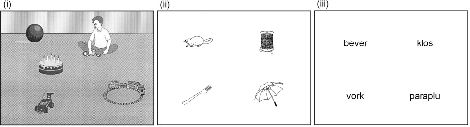
The visual world paradigm
The task
Action-based: "Pick up the..."
Non action-based: "Anne went to Starbucks and bought coffee."
The visual world paradigm
The linking hypothesis
How to link gaze position with language processing?
Activation of linguistic representation → probability of attention shifted to the corresponding picture → probability of fixation
The visual world paradigm
The linking hypothesis
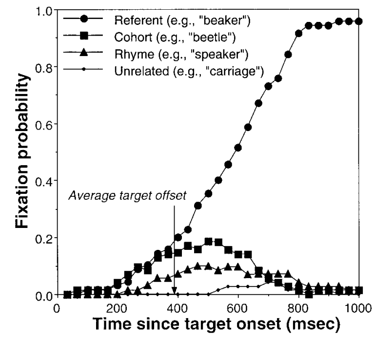
Word recognition in the visual world
Parallel activation during word recognition: Allopenna et al. (1998)
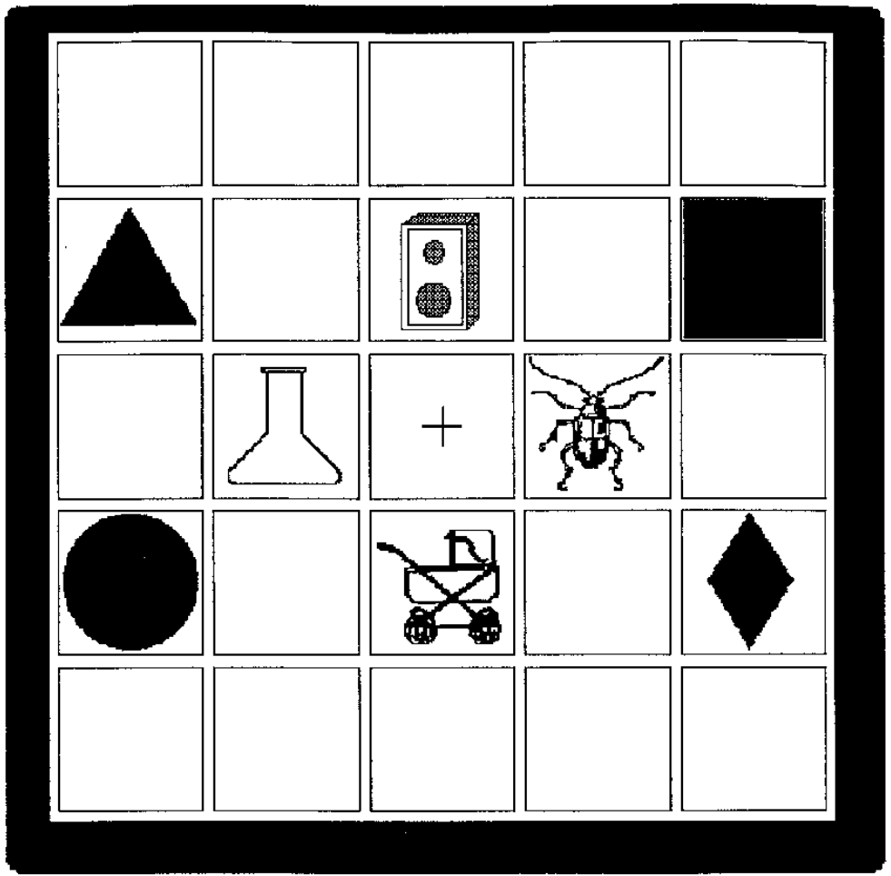
Sentence processing in the visual world
Cooper (1974)
Rapid eye movements to pictures that were named in stories.
Visual attention highly correlated with spoken sentence processing.
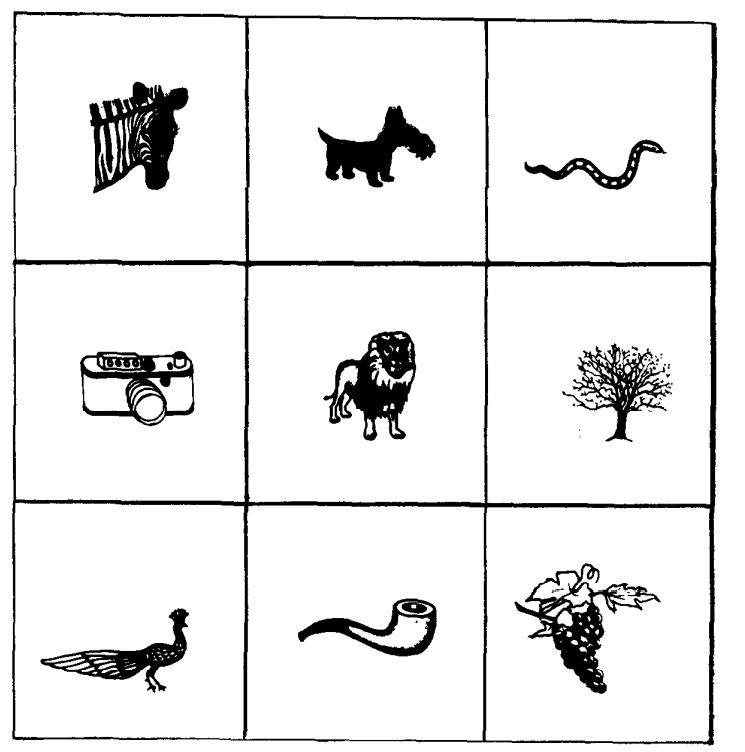
Sentence processing in the visual world
Effect of the visual context: Tanenhause et al. (1995)
Significantly more early looks to the empty towel in the one-referent than in the two-referent condition.
Listeners rapidly use visual context to disambiguate linguistic input.
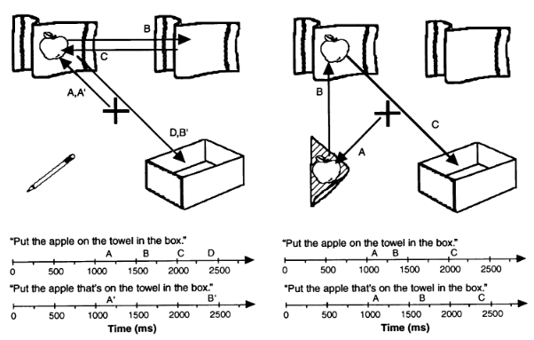
Sentence processing in the visual world
Syntactic ambiguities: Snedeker and Trueswell (2004)
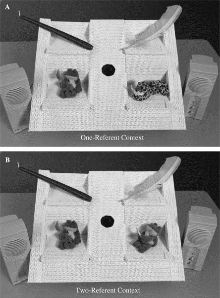
Sentence processing in the visual world
Syntactic ambiguities: Snedeker and Trueswell (2004)
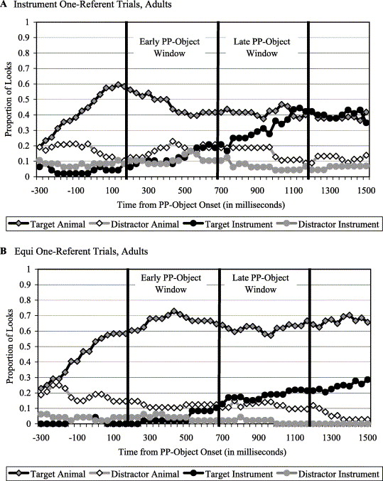 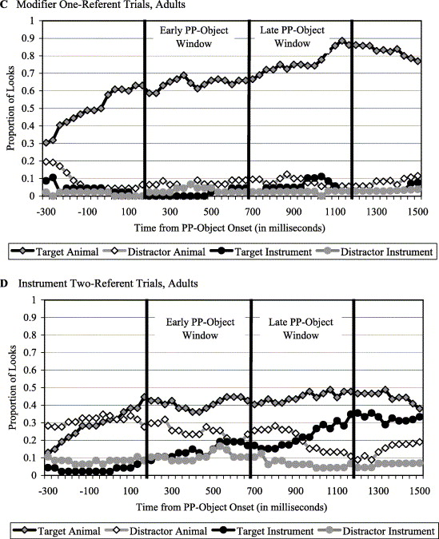 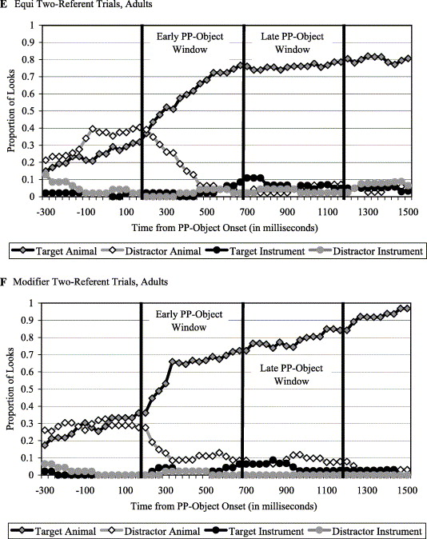
Sentence processing during reading
Is sentence processing incremental?
Sentence processing during reading
Is sentence processing incremental?
Do we interpret a word as soon as it is identified, or do we wait until the end of a sentence/phrase?
Sentence processing during reading
Is sentence processing incremental?
Frazier and Rayner (1982)
(3a) Since Jay always jogs a mile this seems like a short distance to him.
(3b) Since Jay always jogs a mile seems like a short distance to him.
The direct object analysis of a mile is correct in (3a) but not in (3b)
Sentence processing during reading
Is sentence processing incremental?
Frazier and Rayner (1982)
Results: Upon encountering seems in (3b) compared with (3a), readers were more likely to make a regressive saccade.
At seems, the reader must already committed to the direct object analysis of a mile, otherwise seems would not be more "surprising" in (3b) than (3a).
Sentence processing during reading
Is sentence processing incremental?
Rayner et al. (2004)
(4a) John used a knife to chop the large carrots for dinner.
(4b) John used a pump to inflate the large carrots for dinner.
Carrots is plausible in (4a) but not (4b).
Sentence processing in the visual world
Incrementality in sentence processing
Sentence processing during reading
Carry on from yesterday: Is sentence processing incremental?
Rayner et al. (2004)
Results: Increased reading time on carrots when it's implausible (4b) than plausible (4a).
This effect is as early as the first fixation on the critical word (300ms).
Which suggests that by 300ms, the reader has already begun the process of integrating the word's meaning into the sentence (otherwise plausible vs. implausible wouldn't make a difference).
Sentence processing during reading
Is sentence processing incremental?
Syntactic parsing is incremental in reading (Frazier and Rayner (1982)).
Semantic interpretation is incremental in reading (Rayner et al. (2004)).
Sentence processing in the visual world
Incrementality in sentence processing
Altmann and Kamide (1999)
 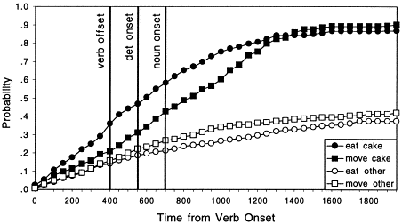
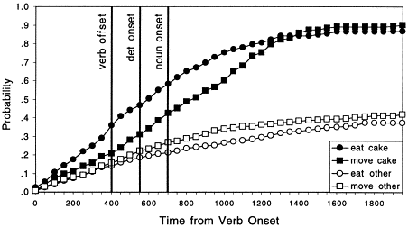
Sentence processing in the visual world
Incrementality in sentence processing
A wide array of information including real-world knowledge as well as linguistic knowledge has been shown to contribute to predictive processing.
including linguistic markers of tense, gender, case, etc.; some phonological patterns; and sentential and/or discourse context.
Sentence processing in the visual world
Pragmatic inferencing
Time course of scalar implicature: Huang and Snedeker (2009, 2011)
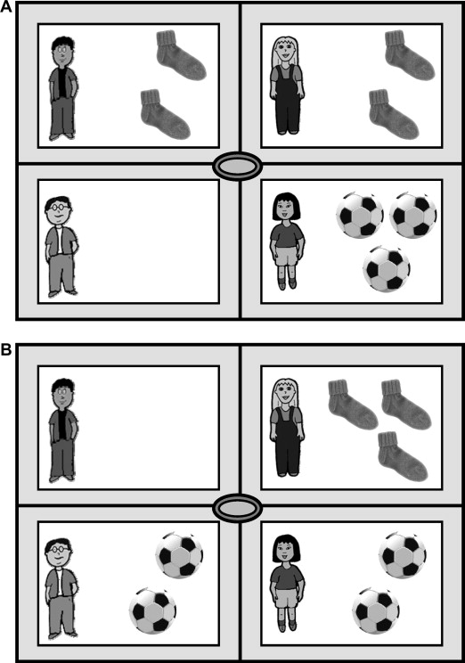 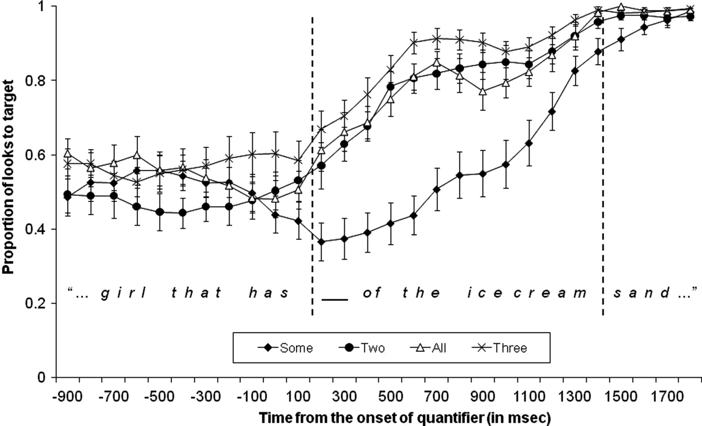
Speech production in the visual world
Gleitman et al. (2007)
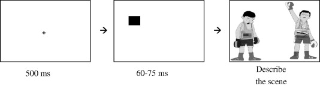
Participants were more likely to mention the cued character first
And subsequently alter their choice of verb ("to chase" vs. "to flee") or their syntactic structure (active vs. passive).
Summary
The visual world paradigm continues to be a popular tool to investigate spoken language processing.
It has its limitations (e.g. the effect of visual context on language processing).
But it's known for the ability to assess time courses of processing
And its ability to address the interplay of language and vision.